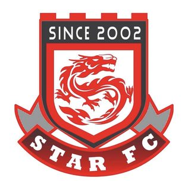

名人堂
首批名单整理中
确认后正式发布
2026 赛季进行中，赛程与战绩持续更新
持续记录比赛集锦与关键瞬间
2026 赛季 · 按位置浏览 STAR FC 当前阵容
记录 STAR FC 的关键人物、功勋队员与名誉成员。

STAR FC 的雏形始于 2001 年，最初由 AIT 留学生队与浙江足球队等群体在新加坡的社区球场相聚踢球。2002 年 9 月，各分支正式整合并更名为 STAR FC，由终身名誉队长 Lemon（9 号） 牵头组建。
二十余年来，STAR FC 作为一支草根 11 人制球队，在新加坡持续活跃，参与本地联赛与友谊赛，累计吸纳超过 200 名球员。球队保留了队徽、队规与纪念球衣等传统，一代带一代，从未散场。
23+
年历史
亚军
2025 UAFL 联赛
200+
历史球员
30+
活跃成员
我们把团队放在第一位：场上服从安排、彼此补位；场下尊重与沟通。一代带一代的传承，让球队在二十余年里持续延续。
技术与经验不藏私：从配合跑位到比赛复盘，愿意讲、也愿意听。我们相信“让队友更容易发挥”，比个人表现更重要。
周末回到绿茵场，是忙碌生活里最放松的两小时。赢球一起开心，失利也不抱怨、不内耗，下一场再来。
我们欢迎不同水平，但重视态度与责任：准时、投入、认真对待训练和比赛。可以慢，但要愿意学、敢于改、愿意为队友付出。
从 2001 到今天，我们走过了这些年份
AIT 留学生队、浙江足球队等群体在新加坡社区球场自发踢球，STAR FC 的雏形在这一年形成。
各分支球队正式整合，由终身名誉队长 Lemon（9 号）牵头，更名为「STAR 足球俱乐部」。
2005 年 8 月 8 日，球队正式发布第一版队规，明确管理规范与行为准则，奠定球队文化基础。
球队对队徽进行改进，启用现在这版带巨龙的盾牌式队徽：红色代表热血与激情，两颗星代表"STAR"的含义，居中的巨龙象征"龙的传人"。
2008 年至 2010 年间，球队创下一年多不败的历史纪录，成为 STAR FC 早期的巅峰时期。
球队在 UAFL 业余联赛中取得联赛第二名的佳绩，主力阵容以老带新，新一代球员逐渐成长为中坚力量。
依托 Veo3 等录像设备，STAR FC 正在更系统地记录比赛与训练。对很多队员来说，这里早已是一群人长期相聚的地方。
二十多年，留下的不只是比分
一篇关于 STAR FC 目标与团队文化的记录。
记录一位关键球员聂少与 STAR FC 的故事。
从 2002 到今天：我们的起点与沿途。
后续会继续补充比赛战报、活动与球队故事。
那个热爱足球的你
无论你是想加入球队、安排友谊赛，还是进行球队合作或活动沟通